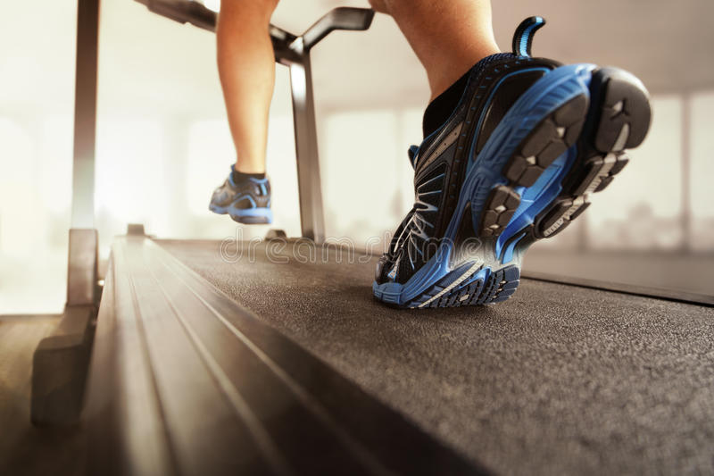

gyms and fitness
A gym session or brisk walk can help. Physical activity stimulates various brain chemicals that may leave you feeling happier, more relaxed and less anxious. You may also feel better about your appearance and yourself when you exercise regularly, which can boost your confidence and improve your self-esteem

Is gym good for health or not?
Plus, it can help manage the symptoms of depression and anxiety. Daily gym workouts can also lower your risk of developing certain conditions such as type 2 diabetes, metabolic syndrome, and osteoporosis. It also helps in keeping the fat levels in check and increases the metabolism of the body.

No matter how much daydreaming you do, that alternate setting doesn’t exist—unless your name is Jay, Ronnie, or Victor. In this time and place, working out plays second fiddle to a number of obligations. And since your time is valuable, you can’t waste one second on a bad workout. Hell, the good ones are tough enough to plan for. Strained reps, poor energy levels, incomplete sets, longer-than-desired workouts, and shoddy results can leave you feeling like your time in the gym is all for naught. But there are things you can do before and after you head to the gym to ensure supercharged workouts today, tomorrow, and beyond—tips that can improve your efficiency, strength, even your time spent with the iron. If you’re going to schedule your day around the gym, make sure you head in there well-rested, your strength tank topped off, your playlist ready to go, and the following pointers in tow. The result? A stronger, fitter body. Now that’s a reality worth reaching for.